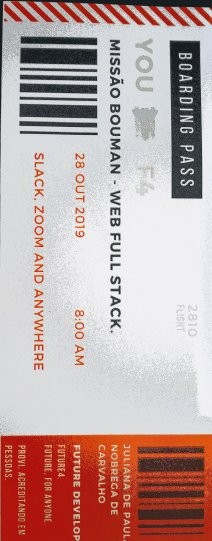

#futuredevoloper #multiskillgestão
Hello, world! Meu nome é Juliana Carvalho, multiskill de formação e atuação,no momento future Devoloper na Future 4 em tempo integral.
Sou mulher, negra, filha, esposa e profissional apaixonada pelo desafio de ressignificar propósitos de vida e negócios.
| Cursando Web Full Stack (Future 4 - conclusão 2020; |
|---|
| Cursando Graduação em Gestão de Tecnologia da Informaçao (FIAP, conclusão 2020); |
| Graduação em Processos Gerenciais (Senac, 2018); |
| Extensão Universitária em Gerência de Projetos – Gestão da Qualidade (Senac, 2017) |
| Extensão Universitária em Gestão de Organizações Hospitalares (Senac, 2016); |
| Técnico em Enfermagem – CeFACS /HCFMUSP (2006); |
| Técnico em Secretariado – E.T.E. “Albert Einstein” (1999). |
| Locaweb -Analista de Suporte Técnico Multiskill (2018-2019); |
|---|
| Instituto de Cirurgia Plástica Santa Cruz - Supervisora Administrativa (2016-2018); |
| Clínica Sitcor Assistência Médica Integrada Ltda - Coordenadora administrativa (2014-2015); |
| Strix IT – Treinamentos em Informática (SAP)- Analista Administrativa (2013-2014); |
| Hospital São Camilo- Analista técnica de contas médicas e processos (2008-2012). |